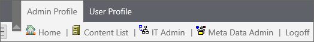

Process Director User Interface (Legacy)
Process Director’s web interface for v6.0.300 and below provides a tabbed navigation system at the top of the browser, containing entries that will take users into various components of Process Director. After the initial installation of Process Director you'll see a very simple navigation scheme displayed.

The top row of the User Interface presents a tab for each Workspace to which you have been assigned. This top row will only appear when you've been given access to more than one Workspace. The second row of displays the navigation buttons that have been configured for each Workspace. Selecting a Workspace from the top row of tabs will present different navigation buttons that are specific to that workspace.
The basic navigation scheme will be expanded through creating new workspaces for different users. Throughout this guide, you may see screenshots from various installations that have a number of different workspace navigation schemes. The navigation schemes for your particular installation will be quite different once you start implementing workspaces relevant to your processes.
For Process Director v5.23 and higher, a different user interface is also available. This user interface, called the Desktop Interface, is documented in the Desktop Interface Workspace topic. This is an optional UI, and must be specifically configured. Otherwise, the traditional Workspace will be displayed to users.
For detailed information about how to create and configure workspaces, please refer to the System Administrator's Guide.
Please refer to the Common UI Elements topic to learn about other common user interface conventions.